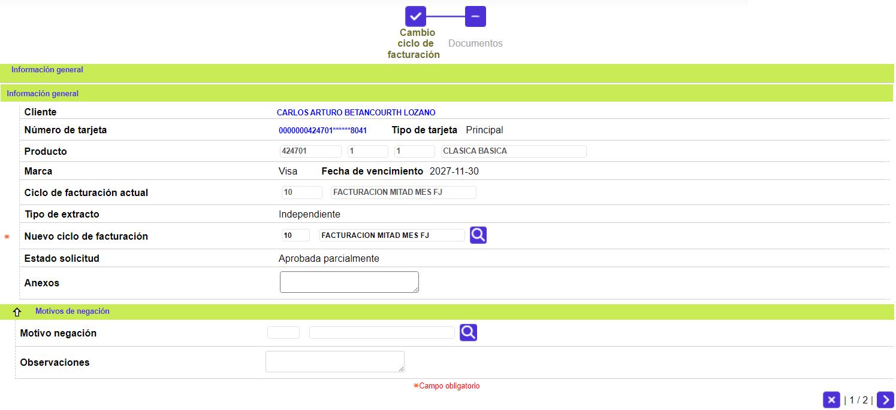
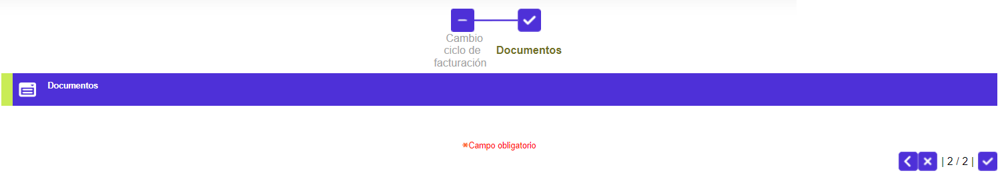
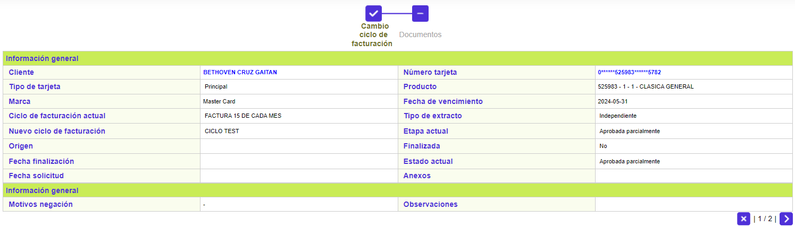
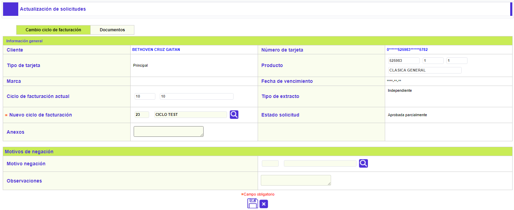

Cambio ciclo facturación
A través de este wizard se realiza la solicitud que permite variar el ciclo de facturación que le fue asignado por el sistema al producto, teniendo en cuenta los parámetros correspondientes definidos en el bloque Control procesos de los Parámetros operativos del emisor, siempre y cuando la tarjeta no presente saldos insolutos. La variación consiste en asignarle un ciclo de facturación diferente al actual. La mayoría de los campos son de salida a excepción de aquel en el que se señala el nuevo ciclo.
En el formulario de otras solicitudes se selecciona la opción Cambio ciclo facturación y la tarjeta a la cual se le ingresará la solicitud.
Tarjeta |
Campo con lista de valores que contiene los diferentes números de tarjeta del cliente. El usuario debe seleccionar aquella para la cual se desea solicitar el cambio de ciclo de facturación. |
Adicionar: una vez se han seleccionado los datos anteriores, se deplegará un wizard de dos pasos. El primero de ellos contiene los bloques Información general y Motivos de negación:

Cliente |
Campo de salida desde el cual se podrá invocar la consulta del cliente al cual se le está ingresando la solicitud. |
Número tarjeta |
Campo de salida desde el cual se podrá invocar la consulta de tarjeta del cliente al cual se le está ingresando la solicitud. |
Tipo tarjeta |
Campo de salida que muestra qué tipo de tarjeta posee el cliente de la solicitud ingresada; puede ser Principal, Extendida, Amparada, o Adicional. |
Producto |
Estos campos se llenan automáticamente una vez ingresado el número de tarjeta asociado a la solicitud, permitiendo conocer el Segmento, Grupo de afinidad y Descripción que junto con el Bin conforman el producto crédito a reponer. |
Marca |
Campo de salida que ilustra la franquicia asociada al producto en la Definición del producto. |
Fecha Vencimiento |
Campo de salida en formato YYYY-MM-DD, que indica la fecha en que expirará el nuevo plástico de la tarjeta, cuando se ha parametrizado que el sistema deba calcular una nueva fecha de vencimiento. |
Ciclo de facturación actual |
Campo que ilustra el ciclo de facturación al que, a la fecha, se encuentra asociado el producto del cliente. |
Tipo de extracto |
Campo de salida que muestra la clase de extracto que se genera para la tarjeta, el cual fue determinado al registrar la solicitud de tarjeta principal o de tarjeta adicional, y/o modificado por medio de la Novedad tipo extracto. |
Nuevo ciclo de facturación |
Campo que ilustra el ciclo de facturación al que, a la fecha, se encuentra asociado el producto del cliente. |
Estado solicitd |
Este campo ilustra la condición en que se encuentra la solicitud en cada momento, y que puede ser En zona gris, Negada totalmente, Negada parcialmente, Aprobada totalmente o Aprobada parcialmente. |
| Anexos | Campo que permite ingresar información relacionada con la solicitud, referente a documentos suministrados por el cliente u otros datos. |

Motivo negación |
Si aplica, contiene el código y la descripción de la causal de negación de la solicitud. |
| Observaciones negación | Campo que puede contener notas que ilustren las razones por las cuales fue denegada la solicitud. |
A través de los botones de la parte inferior derecha, se podrá cancelar el proceso o ir al segundo paso del wizard: Documentos.
Actualizar: Si en formulario del otras solicitudes el usuario invoca la opción Actualizar, se despliega el siguiente formulario.

Detalle: De igual forma, si en formulario del otras solicitudes el usuario invoca la opción Detalle, se despliega el siguiente formulario.
